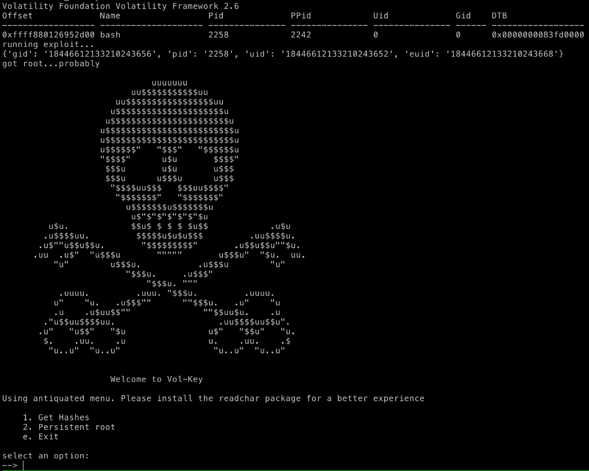
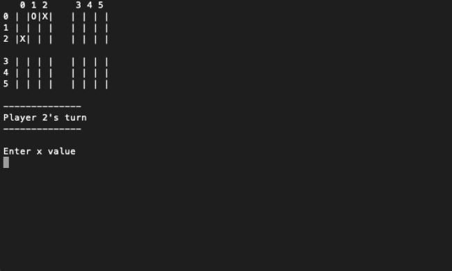
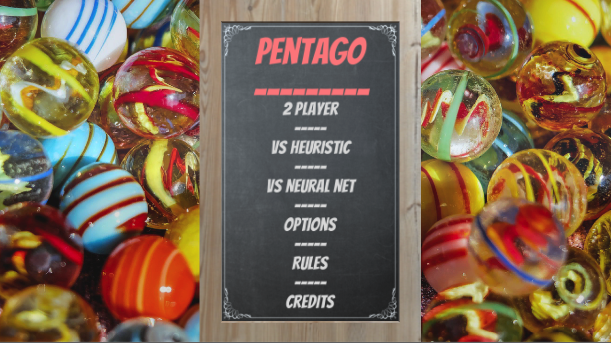
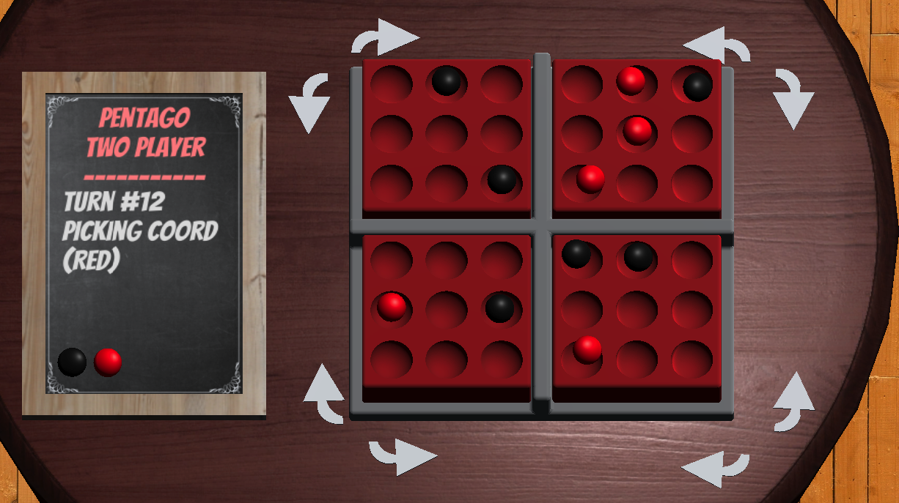
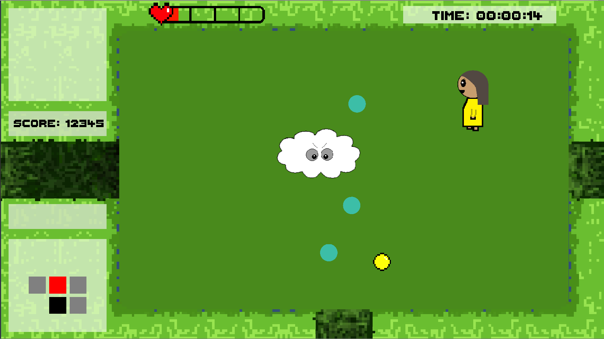
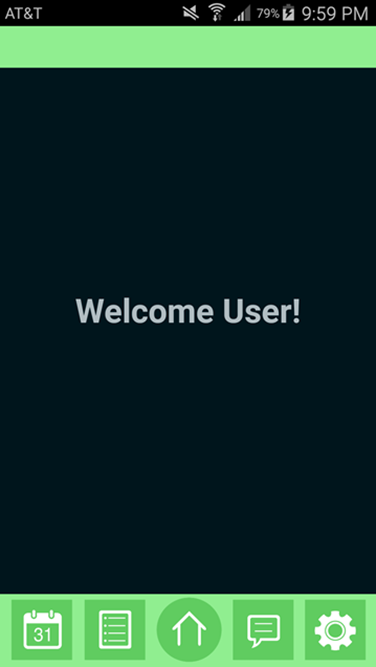
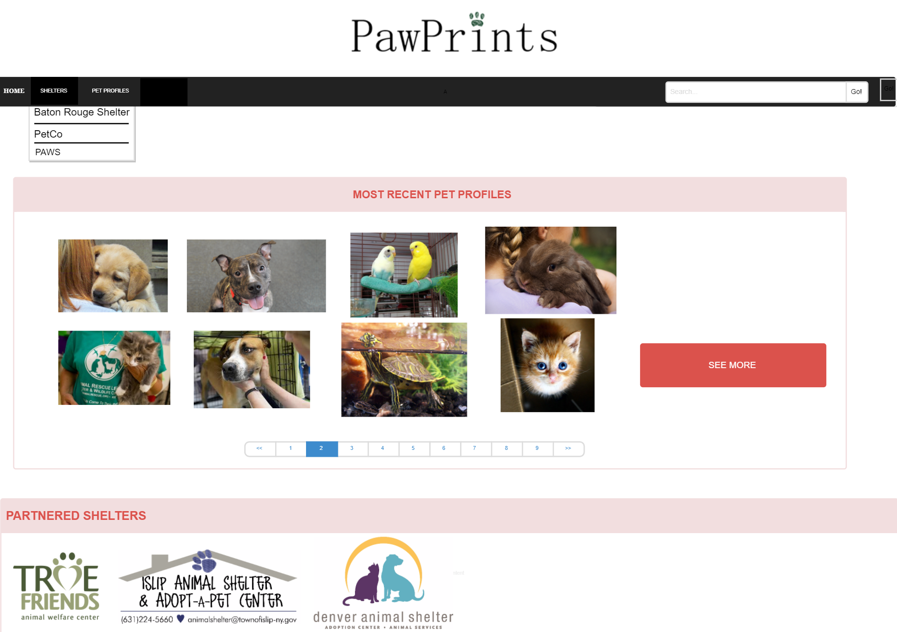
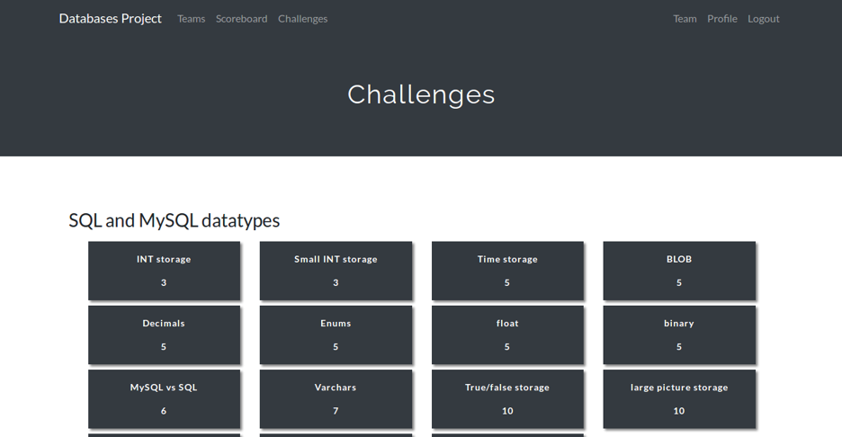
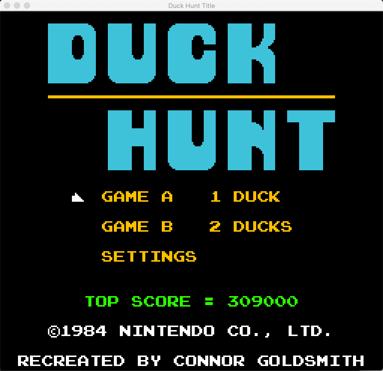
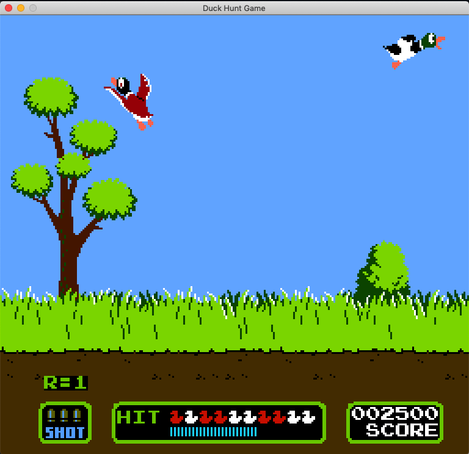

Projects
Volkey
Pentago AI
Screen Resolution Changer
Systems Communication Project
Quabble
The Pet Database
SQL CTF
iNode File System
MLFQ Scheduler
Duck-Hunt Port
Details
Volkey
Github LinkVolkey is a Volitility plugin that we created in order to assist memory forensic analysis. Volitility is a python program that can run many operations on memory images, operations such as finding the running processes or looking at virtual memory. Our plugin runs on Linux (Ubuntu 16.04) images and will escalate the running bash shells to root. This is done by finding the process, where the corresponding user information lies in memory, and changing the applicable values to that of a root user. From there, the person doing the analysis can have full control of the machine and make themselves persistent root if they so choose.

This project was made for CSC 7360, Memory Forensics, at Louisiana State University during my senior year.
Pentago AI
Github LinkPentago is an abstract strategy game for two players with four 3×3 grids arranged into a larger 6×6 grid. This game re-implements the well-known Connect 4 with a twist: After placing a marble, the player has to twist one of the grids by 90°, thus changing the board after every move.
Our project was 3 fold. First, we implemented pentago as a command-line game. Next we designed a manual heuristic that could play against human players. Finally we designed a Neural Network that could have a stronger win percentage than the Neural Network.

This project was made for CSC 4444, Artificial Intelligence, at Louisiana State University during my senior year.
Pentago AI Game
Github LinkI took the Pentago AI from above and transformed it into a Unity game so that the user could control it with a mouse, and see visual feedback and animations


This project was made for CSC 4263, Video Game Design, at Louisiana State University during my senior year.
Thunderstruck (WIP)
Website Link(Github link withheld until semester is completed)
This is a custom game that my group and I are currently working on for Video Game Design class. Created with Unity, Thunderstruck is a Roguelike game where the player tries to move through floors by killing enemies and defeating bosses. The levels are procedurally generated so they are different each time, and the player wins after clearing all the levels, and beating the final boss at the end.

This project was made for CSC 4263, Video Game Design, at Louisiana State University during my senior year.
Screen Resolution Changer
Github LinkWhile using my computer one day, I realized that sometimes there are issues when plugging in different displays. Rather than go into the display setting each time, I thought there had to be an easier way to change to a set profile. Therefore, I made this program to simply change the display information just as the Windows setting would, but instead you can simply bind the corresponding actions to a taskbar icon.
This was a small project made in my spare time.
Systems Communication Project
Github LinkIn the US government, there often is heavy discombobulation when it comes to being on the same page. This happens at every level, from federal to local, however at the federal level miscommunication can be extremely obvious when it comes to people across the country being on different pages. This project addressed a problem that had to do with emergency resource management. Basically, when an emergency occurs, different entities need to communicate with each other to exchange resources and help each other out. The problem came when the realization hit that there was no regulation for what the entities had to use to communicate with each other. This meant that, when a disaster hit (example being Katrina) there was a giant mess of miscommunication as resources wouldn’t get requested or delivered. To address this issue, a standard was created for all entities to use so that they could effectively communicate with each other, however nothing enforced this, so lots did not use it and just kept using the same, older system. Therefore, the goal of this project was to make one uniform system that could take in any type of request and translate it into each of the systems. This meant that any entity could create a message, and any other entity could receive it.
This project was made for CSC 4304, Systems Programming, at Louisiana State University during my senior year.
Quabble
Github LinkThis project was designed to be a multi-platform mobile app that works as a tool to organize activites and duties in apartments. We used the Cross-platform framework Xamarin in order to devleop this app.

This project was made for CSC 3380, Object Oriented Design at Louisiana State University during my sophomore year.
The Pet Database
Github LinkPawPrints is a shelter management system that aids animal shelters in organizing and maintaining their information. The system is composed of three parts: a database, a desktop app, and a website. These three parts combine to create a flexible, organized system that allows shelters to easily engineer a system tailored to their unique needs. While other systems that provide similar functionality exist, PawPrints stands apart in terms of user friendliness and flexibility.

This project was made for CSC 4330, Software Systems at Louisiana State University during my sophomore year.
SQL CTF
This project is follows the "Capture the Flag" model that many security conventions will use so that teams can complete challanges. However, this project was made for our databases class, so instead of cybersecurity questions, the database is full of SQL and Database ones

This project was made for CSC 4402, Introduction to Database Management Systems, at Louisiana State University during my junior year.
iNode File System
The source code for this project is being withheld to avoid any potential cheating by students taking the class at a later date, however it can be provided upon request.The Linux OS uses the EXT file systems as its primary method of data storage. This project aims to implement an example iNode filesystem based off a software disk that is simulated in memory.
This project was made for CSC 4103, Operating Systems, at Louisiana State University during my junior year.
MLFQ Scheduler
The source code for this project is being withheld to avoid any potential cheating by students taking the class at a later date, however it can be provided upon request.This project aims to implement an example multilevel feedback queue process scheduler.
This project was made for CSC 4103, Operating Systems, at Louisiana State University during my junior year.
Duck-Hunt Port
While this project was made for purely educational purposes, the source code is withheld to avoid any possible copyright infringementThis project is a recreation of the popular Nintendo game Duck Hunt using a Java graphics library that was assigned to us by our professor.

